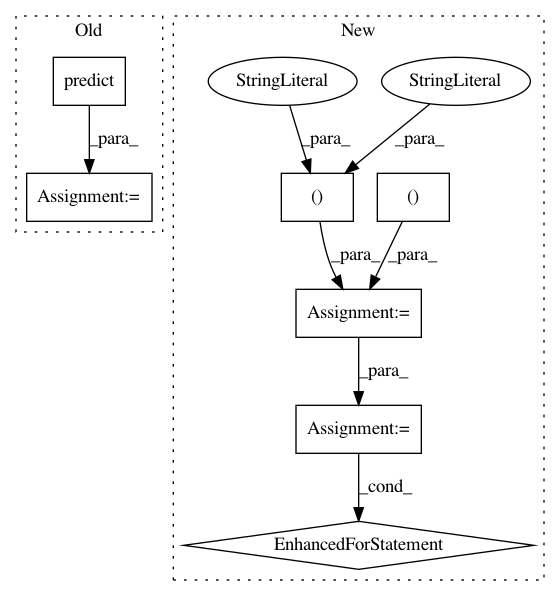

41ef0bf4ece3daf13a02b14c79eb7ddebb42bc0c,facegen/generate.py,,generate_from_yaml,#Any#Any#Any#Any#,418
Before Change
print("Generating images...")
gen = model.predict(inputs, batch_size=batch_size)
print("Writing to "{}"...".format(output_dir))
for i in range(0, gen.shape[0]):
After Change
for idx in tqdm(range(0, num_images, batch_size)):
batch = {
"identity": inputs["identity"] [idx:idx+batch_size,:],
"emotion": inputs["emotion"] [idx:idx+batch_size,:],
"orientation": inputs["orientation"][idx:idx+batch_size,:],
}
gen = model.predict_on_batch(batch)
for i in range(0, gen.shape[0]):
if K.image_dim_ordering() == "th":
image = np.empty(gen.shape[2:]+(3,))
for x in range(0, 3):
image[:,:,x] = gen[i,x,:,:]
else:
image = gen[i,:,:,:]
image = np.array(255*np.clip(image,0,1), dtype=np.uint8)
file_path = os.path.join(output_dir, "{:05}.png".format(count))
scipy.misc.imsave(file_path, image)
count += 1
In pattern: SUPERPATTERN
Frequency: 3
Non-data size: 7
Instances
Project Name: zo7/deconvfaces
Commit Name: 41ef0bf4ece3daf13a02b14c79eb7ddebb42bc0c
Time: 2016-09-04
Author: zo7.flynn@gmail.com
File Name: facegen/generate.py
Class Name:
Method Name: generate_from_yaml
Project Name: scikit-learn/scikit-learn
Commit Name: e650a207efc9dd33556b1b9678b043f73a18aecb
Time: 2019-11-14
Author: thomasjpfan@gmail.com
File Name: examples/model_selection/plot_confusion_matrix.py
Class Name:
Method Name:
Project Name: oddt/oddt
Commit Name: f8175e0221bbf31ffc8c10ee809b7ee2e118362d
Time: 2018-02-08
Author: maciek@wojcikowski.pl
File Name: oddt/scoring/functions/NNScore.py
Class Name: nnscore
Method Name: train